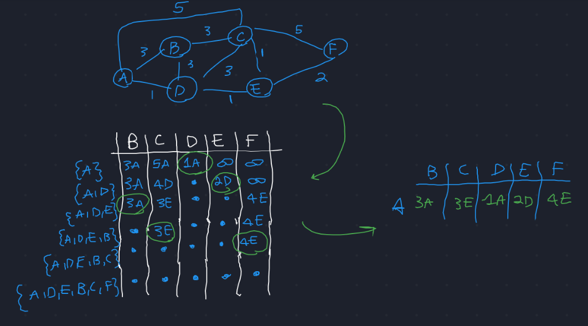
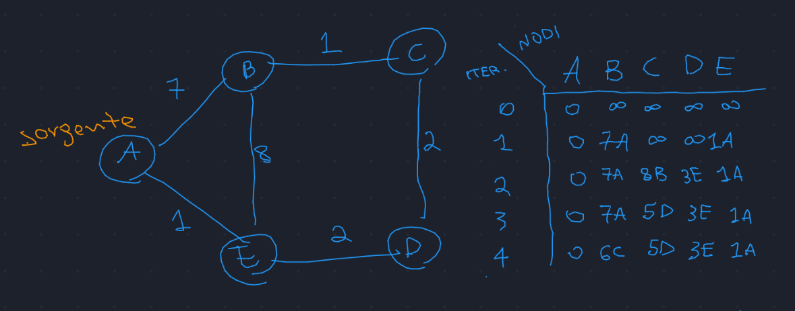
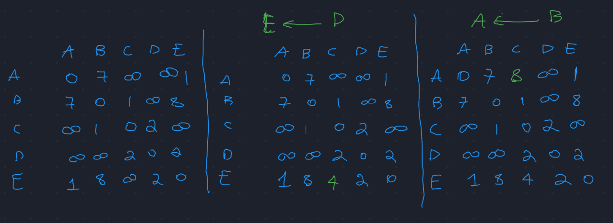
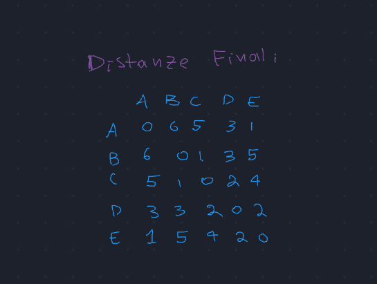
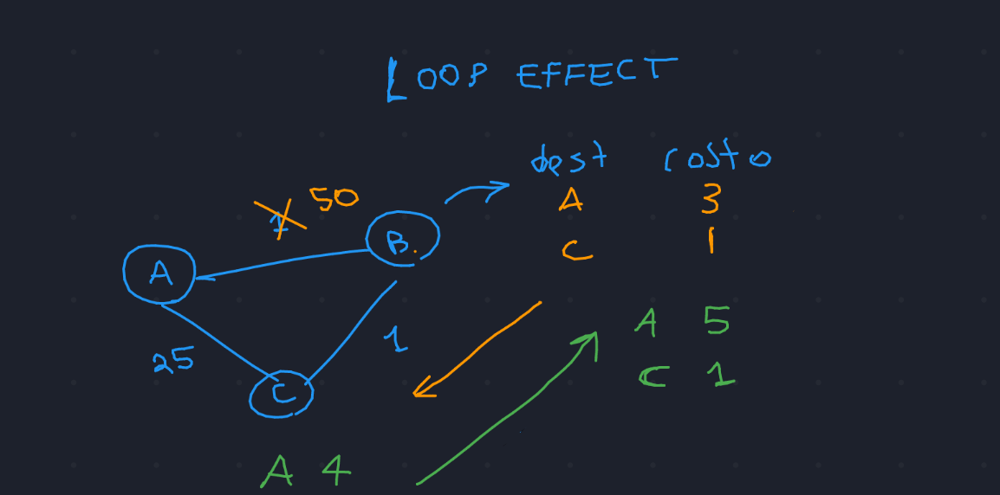
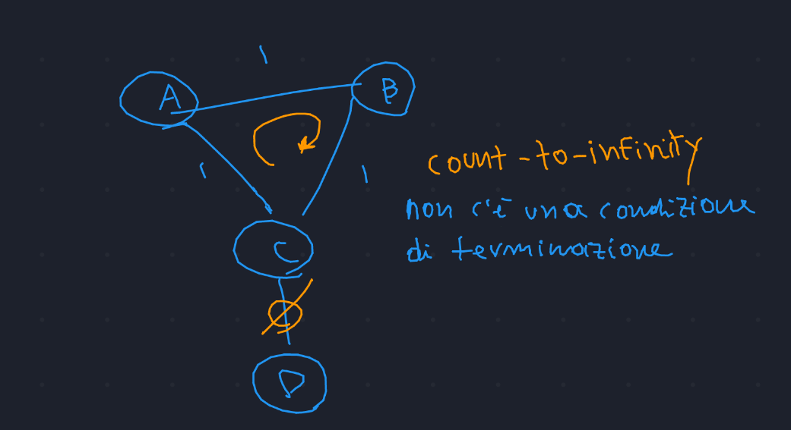

IP Routing (t)
Info
Il seguente file contiene informazioni delle seguenti lezioni dall' archivio telegram:
- 2020-10-27
- 2020-11-02 (suddivisa in 2 video nell'archivio)
Table of Contents
1 Host e Router
- Host:
terminatoredella connessione; - Router:
intermediarioall'interno della rete;
Quando un host invia un pacchetto, deve decidere a quale router
inviarlo. Quest'ultimo viene detto First Hop Router;
In assenza di regole specifiche, il f.h.r è il Default Gateway;
Il Next Hop Router è il prossimo router a cui il pacchetto deve
essere inoltrato, se ci si posiziona in un certo nodo della rete.
Quando il pacchetto arriva al router che gestisce la rete locale
dell'host destinazione, allora ha raggiunto il Destination Router;
Ogni volta che si "attraversa" un router si dice che il pacchetto
ha fatto un salto, o hop;
2 Problema del routing
Instradare i pacchetti nella rete è un problema complesso. Può tuttavia essere suddiviso in 2 sottoproblemi: (i) ip forwarding e (ii) routing.
2.1 Ip forwarding
Problema del singolo router che deve capire come inoltrare il
pacchetto al prossimo router per raggiungere la destinazione
(next hop).
Questa scelta viene fatta in base alla tabella di routing e all'indirzzo
destinazione.
La tablella di routing specifica per ogni Network Destinazione qual'è il
next hop router a cui inoltrare il pacchetto.
2.2 Protocollo di Routing
In questo sottoproblema ci si occupa di mantenere la tabella di routing aggiornata per risolvere il sottoproblema 1. Infatti non è banale popolare la tabella di routing (in laboratorio l'abbiamo fatto a mano, ma non succede così nel mondo reale).
Quando si pensa al problema del routing, ci si deve ricordare che si è sempre nell'ottica del packet switching, o commutazione di pacchetto (\(\rightarrow\) rivedere appunti corrispondenti).
3 Architettura di un router
4 componenti fondamentali:
Porta di ingressoE' a sua volta suddivisa in 3 parti:- Line Termination
- Scheda di rete
- Lv.3 queue: Coda in cui i pacchetti vengono messi, vengono processati uno a uno secondo una logica fifo
CommutatoreArea che constente di prendere pacchetti da qualsiasi porta e inoltrarli su qualsiasi altra porta. Questo componente lavora in stretto contatto con il processore di routing. Per fare ciò ci sono diversi approcci:- Switch: si fa una mappatura ingresso \(\rightarrow\) uscita su un'area di memoria condivisa.
- Bus: ci si basa su un semplice bus di comunicazione: verrà detto alla scheda di uscita "in che istante" leggere l'input dal bus.
- Crossbar: tutte le schede di rete sono completamente connesse tra di loro.
ProcessoreComponente che ha il compito di controllare la tabella di routing e istruire il commutatore.Porta di UscitaDuale della porta di uscita, anche in questo caso è implementata una logica di buffering con una coda.
Congestione: \(\rightarrow\) riempimento del buffer! Se capita, i pacchetti che non riescono a entrare nella coda vengono persi. In questo caso, il mittente non sa che il pacchetto che ha inviato in realtà è stato perso e non arriverà mai al destinatario.
4 Modalità di trasmissione dei dati
I router lavorano usando l'approccio store and forward.
Infatti il router ha un ruolo attivo nella modifica dei pacchetti:
una volta che ha ricevuto un pacchetto, deve poter eseguire alcune operazioni fondamentali come ad esempio:
- Controllo di integrità dei pacchetti (checksum);
- Traduzione dell'indirizzo sorgente/destinazione se si fa NAT;
- Modifica del time to live.
La funzione di routing, che quindi sceglie il percorso nella rete attraverso il quale consegnare i pacchetti, ha alcune caratteristiche fondamentali da tenere a mente:
- Consegna priva di connessione: quindi ogni pacchetto è trattato in modo indipendente;
- Consegna con impegno (best effort): si cerca di consegnare ogni pacchetto;
- La consegna è non garantita, i pacchetti possono essere persi, duplicati, ritardati, o consegnati senza ordine.
5 Algoritmi di Routing
In questa sezione viene spiegato come le tabelle di routing dei vari noi di una rete vengono effettivamente riempite. Lo scopo è quello di trovare il percorso ottimale (quindi con costo minimo) per raggiungere tutti gli altri nodi, data una sorgente. Nel mondo reale, il costo di percorrenza di un link dipende da alcuni fattori:
- Fattori statici \(\rightarrow\) topologia della rete (numero di hop) , banda dei link (cerco di favorire i collegamenti più veloci);
- Fattori dinamici \(\rightarrow\) traffico della rete, guasti, carico dei router. Magari mi conviene passare ad un link più lento se il link veloce manda ad un router congestionato;
- Costi economici \(\rightarrow\) accordi tra A.S;
- Tipi di traffico \(\rightarrow\) nonostante sia vietato secondo il principio della net neutrality, alcuni sistemi autonomi differenziano il traffico comunque!
5.1 Classi di Algoritmi di Routing
Per modellare una topologia di rete, si usa un grafo pesato, che può essere sfruttato per applicare diversi algoritmi di routing. Esistono principalmente 2 classi di algoritmi di routing:
- Algoritmi di routing
globale: ogni nodo ha una conoscenza completa della topologia della rete. Es. Link state protocol. - Algoritmi di routing
locale: algoritmi distribuiti, in cui ogni nodo sa comunicare soltanto con i suoi vicini, ossia gli altri nodi connessi direttamente a lui tramite un link. Questo approccio è ovviamente più realistico su reti con un alto numero di nodi. Es. Distance Vector
5.1.1 Algoritmi Link State
Come anticipato, per quanto riguarda questa classe di algoritmi
si parte dal presupposto secondo cui i costi di ogni link sono noti a tutti i nodi.
Ciclicamente ogni nodo invia a tutti (link state broadcast) il proprio stato interno e lo stato dei propri
link. E' un modo per sincronizzare tutti sull'attuale stato della rete globale.
A questo punto ciascun nodo calcola i cammini di costo minimo verso
tutti gli altri nodi della rete mediante l'algoritmo di Dijkstra.
Il problema ovviamente è quello del flooding della rete, che viene
inondata da messaggi broadcast.

5.1.2 Algoritmi Distance Vector
Secondo questo approccio si presuppone che ogni router sia indipendente, e riceve aggiornamenti soltanto dai propri vicini.
Ad ogni iterazione, ogni nodo ricalcola la tabella di routing secondo le nuove
informazioni fornite. Si usa quindi l'algoritmo di Bellman-ford
Ripasso dell'algoritmo di bellman ford dal punto di vista teorico, ricordando che il numero di iterazione indica quanti archi posso usare per raggiungere un determinato nodo \(\downarrow\) 
Nelle reti il procedimento è più chiaro se visualizzato nel modo seguente: ad ogni iterazione, un nodo arbitrario fornisce informazioni sui propri link ad un'altro nodo a lui collegato, che aggiorna di conseguenza la sua tabella di routing. \(\downarrow\)

Dopo diverse iterazioni, se la topologia rimane invariata, il corrente stato della tabella contiene i cammini minimi di tutti i nodi \(\downarrow\)

Ovviamente se in ogni casella della tabella si salva anche il predecessore oltre che alla distanza, si riesce poi ad estrarre la tabella di routing per ogni nodo.
I problemi possono sorgere se la rete cambia nel tempo. In tal caso, se un link degenera, gli unici che si accorgono del cambiamento sono i due nodi direttamente collegati dal link, quindi per aggiornare l'intera tabella l'informazione deve essere propagata diverse volte.
6 Complicanze
- E' impossibile avere una tabella di routing che contiene una riga
per ogni router \(\rightarrow\) si usano dei modi per
aggregaregli indirizzi. Si parlerà più estesamente di questo problema nella prossima lezione; Rimbalzo: gli algoritmi distance vector sono limitati ad una visione parziale, che può essere scorretta o non più aggiornata.
6.1 Evitare l'effetto Rimbalzo
Con "effetto rimbalzo" si intende la verifica di cicli nell'aggiornamento della tabella di routing, come nel caso in figura \(\downarrow\) 
Per risolvere l'effetto rimbalzo bisogna inventarsi un modo per evitare cicli. Si può fare aggiornando la tabella non solo con il costo del percorso, ma specificando anche per quale next hop passare. In tal caso, se un nodo riceve da un'altro router un cammino minimo che include lui stesso come nodo intermedio, allora si può ignorare questo aggiornamento, dato che darebbe il via all'effetto rimbalzo.
6.2 Caso Count to Infinity

Come evitare questo problema? \(\rightarrow\) si può considerare una soglia che indica la distanza massima che può essere presente in un record.
Metodo Split Horizon: non mando più il vettore di distanze a tutti i vicini indistintamente. Ad esempio, il vettore che B invia a C non deve contenere nessuna destinazione che B considera raggiungibili attraverso C.
Tuttavia, tutti questi approcci funzionano in esempi semplici, sono difficilmente implementabili
nel mondo reale. Per questo si usa il Time to Live, un modo semplice ed efficace
per evitare cicli.
7 Confronto
Per confrontare gli algoritmi si fa riferimento a 2 parametri:
- Overhead \(\rightarrow\) (i)numero e (ii)dimensioni dei messaggi;
- Dimensione:
LS \(\rightarrow\) pacchetti di piccola dimensione;
DV \(\rightarrow\) pacchetti di grande dimensione; - Numero:
LS \(\rightarrow\) molti pacchetti;
DV \(\rightarrow\) pochi pacchetti, comunicazione solo con i vicini;
- Dimensione:
- Robustezza:
- LS \(\rightarrow\) più robusto, non ha problemi di loop;
- DV \(\rightarrow\) problemi che abbiamo discusso in precedenza;
I Link State vengono usati per reti relativamente ristrette. Ad esempio, all'interno di un autonomus system.
I Distance Vector vengono usati, ad esempio, per i collegamenti tra diversi autonomus system.